Il y a plus de 2 600 ans, les savants grecs avaient déjà constaté que l’ambre jaune
(une résine naturelle) frottée énergiquement avec une fourrure avait la faculté d’attirer
les corps légers tels que les cheveux ou fétus de paille. C’est d’ailleurs le mot grec
𝜂𝜆𝜀𝜅𝜏𝜌𝑜𝜈, signifiant ambre, qui est à l’origine du terme électricité. Cette
électrisation par frottement, dite triboélectricité, s’observe facilement dans la vie
quotidienne. Parfois une forte électrisation peut même produire des étincelles comme
lorsqu’on enlève un pull de laine rapidement (à condition d’être dans une pièce sombre pour
percevoir ces étincelles). L’éclair, lors d’un orage, est un phénomène d’électricité
statique impressionnant qui fut longtemps craint par les hommes. Il fallut attendre
B. Franklin en 1752 pour identifier la nature électrique du phénomène et pour
maîtriser les dégâts du tonnerre par l’invention du paratonnerre.
Les deux formes de l’électricité
C’est Charles du Fay qui observa les deux formes d’électricité. On peut mettre en évidence
ces deux formes par les expériences suivantes.
Expérience 1
Un pendule électrostatique est constitué d’une bille de polystyrène recouverte d’une feuille
d’aluminium suspendue à une potence par un fil. Lorsqu’on approche une baguette électrisée
du pendule,la bille est attirée par la baguette. Après contact avec la baguette, elle est
repoussée.
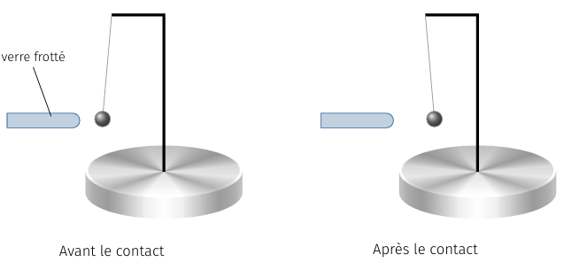
Expérience 1.
Expérience 2
Si on électrise un pendule électrostatique par contact avec une baguette chargée, et que
l’on approche successivement d’autres baguettes électrisées, on s’aperçoit que la boule du
pendule est soit attirée, soit repoussée par les diverses baguettes. On peut donc en déduire
qu’il existe deux types de forces électriques.
Électrisation par influence
Un électroscope est constitué d’une tige métallique à laquelle on fixe une aiguille
métallique pouvant librement tourner autour d’un axe. On fixe parfois deux feuilles très
fines en or ou en aluminium. L’ensemble est placé dans une enceinte transparente et
isolante (verre). Lorsqu’on approche une baguette électrisée de l’électroscope (sans le
toucher), l’aiguille s’écarte de la verticale. Si on éloigne la baguette, l’aiguille
retrouve sa position verticale de repos. Il y a électrisation de la tige et de l’aiguille
sans contact, seulement par influence.
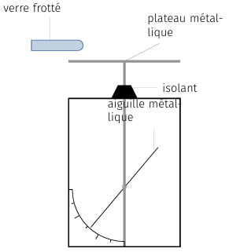
Plus la baguette se rapproche de l’électroscope, plus les aiguilles s’écartent.
Notion de charge électrique
Jusqu’au XVIIIe siècle, l’électricité est une science
essentiellement qualitative et il faut attendre le début du
XIXee siècle pour qu’une théorie mathématique de
l’électricité émerge : c’est l’électrostatique. La notion de charge électrique
algébrique s’est imposée au fil du temps car elle permettait de décrire correctement les
phénomènes. De nos jours, on admet les hypothèses suivantes :
La matière est constituée de particules que l’on peut caractériser par une propriété
scalaire, noté \(q\) et désignant la charge électrique. Cette charge est positive,
négative ou nulle (on parle de particule neutre dans ce cas).
Deux particules possédant une électricité de même nature, c’est-à-dire une charge de
même signe, se repoussent ; elles s’attirent dans le cas contraire.
La charge étant caractéristique de la matière, elle ne dépend pas du référentiel.
Par ailleurs, la charge électrique d’un système isolé se conserve.
Enfin, Millikan a montré en 1906 (Prix Nobel 1923) que la charge électrique est
quantifiée. C’est en étudiant la chute de microscopiques gouttes d’huile électrisées,
entre les armatures d’un condensateur, qu’il mit en évidence le caractère discontinu de
la charge :
$$
\quad q = Ne \quad / N \in \mathbb{Z}
$$
où \(e\) désigne la charge élémentaire. De nos jours, on sait que ce caractère
granulaire de la charge trouve son origine dans la structure atomique de la
matière : tout corps matériel est constitué d’atomes eux même formés d’un noyau
chargé positivement (découvert en 1911 par Rutherford) autour duquel gravitent
des électrons, particules élémentaires possédant toutes la même charge \(q_e = -e\). La
plupart des phénomènes électriques sont liés à un déplacement ou apport ou retrait
d’électrons à la matière.
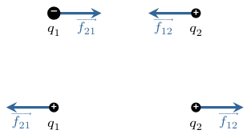
Répulsion ou attraction électrostatique.
Le concept de charge permet d’expliquer les différents expériences décrites précédemment.
Expérience 1
Lorsqu’on approche la baguette électrisée de la sphère métallique, les électrons libres du
métal sont attirés par le verre chargé positivement, laissant derrière eux des charges
positives. Bien que la charge globale reste nulle, la force résultante est
attractive : en effet, l’attraction entre les électrons et le verre l’emporte sur la
répulsion entre les charges positives du conducteur et le verre. Après un contact, quelques
électrons sont transférés sur la baguette en verre ce qui rend la sphère métallique
globalement positive d’où la répulsion observée.
Expérience 2
Le frottement d’un corps sur un autre induit un transfert d’électrons dans un sens qui
dépend des corps frottés l’un contre l’autre. C’est pourquoi, il est possible d’électriser
positivement ou négativement une baguette. On peut donc produire une répulsion ou une
attraction.
Expérience 3
Les charges positives du verre électrisé attirent les électrons libres du plateau métallique
faisant apparaître au niveau de l’aiguille et de la tige métallique un défaut d’électrons
(des charges positives). L’aiguille métallique est alors d’autant plus repoussée par la tige
qu’elle est chargée. La rotation de l’aiguille est donc d’autant plus importante que la
baguette se rapproche.
Loi de Coulomb
À la fin du XVIIIe siècle, l’idée que les charges
produisent une force de type newtonien (en \(1/r^2\)) était une hypothèse séduisante mais
difficile à prouver expérimentalement.
L’expérience de Coulomb
C’est en 1785 que Coulomb met en évidence, à l’aide d’une balance de torsion qu’il a
réalisée lui-même, la loi qui porte désormais son nom. L’expérience consiste à fixer une
boule de sureau \(B\) à l’extrémité d’une tige isolante, suspendue en son milieu à un fil
d’argent dont on peut contrôler l’angle de torsion. Ce système étant au repos,on approche
une autre boule \(A\) tenue par une tige isolante au contact de la boule \(B\). Ensuite, on
électrise les deux boules simultanément de sorte qu’elle acquièrent la même charge \(Q\). La
boule \(A\) est maintenue en place et la boule \(B\) s’éloigne sous l’action de la force
électrique. À l’équilibre, le moment de la force électrique compense le couple de torsion.
Il suffit ensuite d’augmenter, de façon contrôlée, la torsion du fil pour rapprocher les
boules et mesurer la force pour des distances plus faibles. C’est ainsi que Coulomb trouva
que la force électrique varie en \(1/r^2\).
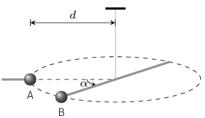
Expérience de Coulomb.
Pour résumer, la force électrique dite aussi force coulombienne
entre deux charges ponctuelles immobiles dans le vide varie comme l’inverse du carré de la
distance qui les sépare et dépend de leur quantité de charge.
Loi de Coulomb
Soient \(q_1\) et \(q_2\) deux charges ponctuelles séparées d’une distance \(r\). La force
électrique de \(q_1\) sur \(q_2\) s’écrit :
$$
\quad \boxed{ \overrightarrow{f_{12}} = K \frac{q_1q_2}{r^2} \overrightarrow{u_{12}} }
$$
où \(\overrightarrow{u_{12}}\) désigne le vecteur unitaire dirigé de \(q_1\) vers \(q_2\)
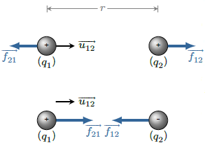
Forces de Coulomb.
Dans le Système international d’unités, les charges s’expriment en coulombs
(symbole : \(\rm{C}\)) et la constante \(K\) vaut
$$
\quad K = \frac{1}{4\pi\varepsilon_0} \simeq 9,0.10^{9}\,\rm{m.F^{-1}}
$$
où \(\varepsilon_0\) désigne la permittivité diélectrique du vide.
Le champ électrique
Champ électrostatique créé par un ensemble de charges ponctuelles
Considérons une distribution de charges ponctuelles (\(q_1,\dotsc,q_N\)) placées en
différents points \(P_{i=1 \dotsc N}\) et une charge test \(Q\) placée en \(M\).
Cherchons à exprimer la force qu’exerce cette ensemble de charges sur la charge test. On
admet que l’interaction électrique obéit au principe de superposition : la force
résultante est la somme vectorielle des forces qu’exercent chacune des charges \(q_i\) sur
la charge \(Q\) soit
$$
\quad \overrightarrow{F} = \sum_{i=1}^{N} \overrightarrow{f_i}
= \sum_{i=1}^{N} \frac{Qq_i}{4\pi\varepsilon_0r_i^2} \overrightarrow{u_i}
$$
avec
$$
\quad r_i = P_iM
$$
Ce qui permet d’écrire
$$
\quad \boxed{ \overrightarrow{F} = Q \overrightarrow{E}(M) }
$$
\(\overrightarrow{E}(M)\) désigne le champ électrique créé en \(M\) par la distribution de
charges. Ce vecteur est défini en tout point de l’espace : il s’agit d’un champ
vectoriel.
$$
\quad \boxed{ \overrightarrow{E}(M)
= \sum_{i=1}^{N} \frac{q_i}{4\pi\varepsilon_0r_i^2} \overrightarrow{u_i} }
$$
On peut voir \(\overrightarrow{E}(M)\) comme une propriété locale de l’espace. Notons que
lorsque l’on change la charge \(q_i\) en \(q_i'\) cela modifie le champélectrique en \(M\)
mais de façon non instantané. On verra que toute perturbation électromagnétique se propage à
la vitesse de la lumière dans le vide.
Ordre de grandeur
Dans le Système international d’unités, l’intensité du champ électrique se mesure en volt
par mètre (symbole \(\rm{V.m^{−1}}\)). Le champ à la surface de la Terre vaut environ
\(100-150\,\rm{V/m}\) en dehors des périodes d’orage. En période d’orage, le champ terrestre
est inversé et est de l’ordre de \(10\,\rm{kV/m}\). Il peut même atteindre
\(100\,\rm{kV/m}\) près des pointes conductrices. La lumière solaire qui nous arrive sur
Terre est une onde électromagnétique : le champ électrique de l’onde est de l’ordre
de (en valeur efficace) \(1\,\rm{kV/m}\). Dans l’atome, la cohésion est assurée grâce à des
champs électriques énormes, de l’ordre de \(100\,\rm{GV/m}\).
Topographie- Symétrie
Décrivons différentes situations pour dégager quelques propriétés du champ électrique. La
représentation d’un champ vectoriel fait généralement appel à la notion de
ligne de champ.
Champ créé par une charge ponctuelle
Plaçons une charge ponctuelle \(q\) à l’origine d’un repère et calculons le champ électrique
créé en un point \(M\) de l’espace situé à la distance \(r\) de l’origine. On obtient
$$
\overrightarrow{E}(M) = \frac{q}{4\pi\varepsilon_0r^2} \overrightarrow{u_r}
$$
où \(\overrightarrow{u_r}\) désigne le vecteur unitaire radial du système de coordonnées
sphériques.
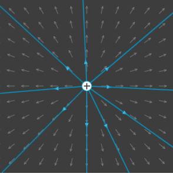
Carte de champ d’une charge ponctuelle positive.
On observe que le champ est radial et centrifuge si la charge est positive. Évidemment,
si l’on inverse le signe de la charge, les lignes de champ sont radiales et orientées vers
la charge.
Champ créé par un doublet
Considérons deux charges ponctuelles de signe opposé, \(q\) et \(-q\). Ce système forme ce
que l’on appelle un doubletélectrostatique.
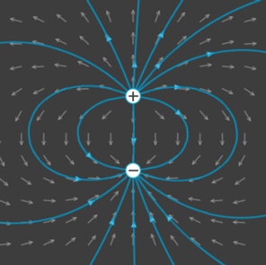
Carte de champ d’un doublet.
Les lignes de champ partent de la charge positive pour converger vers la charge négative
sans jamais se refermer. Par ailleurs, la distribution présente un plan de symétrie (plan
miroir, vertical ici). On constate que pour tout point \(M\) de ce plan,
\(\overrightarrow{E}(M)\) est dans ce plan. La distribution présente également un plan
d’antisymétrie (plan horizontal équidistant des deux charges) qui échange le signe des
charges après une opération miroir. On peut noter que pour tout point \(M\) de ce plan,
\(\overrightarrow{E}(M)\) est perpendiculaire à ce plan.
Champ créé par deux charges de même signe
Considérons deux charges de même signe et de valeur différente situées sur un axe
horizontal.
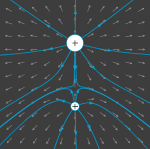
Carte de champ d’un système de 2 charges positives.
On peut faire les mêmes remarques que précédemment. Les lignes de champ partent des charges
positives. Là encore, les lignes de champ ne se referment pas sur elles mêmes. En terme de
symétrie, la distribution de charges présente un plan de symétrie vertical et, comme
précédemment, pour tout point \(M\) de ce plan, \(\overrightarrow{E}(M)\) est dans ce plan.
En revanche, la distribution ne présente pas de plan d’antisymétrie. Enfin, il existe un
point ou le champ est nul situé entre les deux charges. Ce point est un point singulier.
Symétries
Les exemples précédents mettent en évidence quelques propriétés de symétrie très générales.
Supposons qu’une distribution présente un plan de symétrie \(\mathcal{P}\), c’est à-dire que
la distribution de charge est invariante par rapport à une réfléxion de plan
\(\mathcal{P}\).
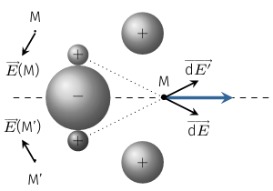
Distribution présentant un plan de symétrie.
On montre alors que le plan se comporte également comme un miroir vis-à-vis du champ
électrique. Autrement dit, si l’on note \(M'\) l’image de \(M\) par une symétrie de plan
\(\mathcal{P}\), on a
$$
\quad \overrightarrow{E}(M') = \mathrm{sym}\left( \overrightarrow{E}(M) \right)
$$
Intéressons nous aux points situés dans le plan de symétrie. On voit alors qu’à tout point
\(P\) de la distribution, créant un champ \(\overrightarrow{\mathrm{d}E}(M)\),
correspond un point symétrique \(P'\) créant un champ \(\overrightarrow{\mathrm{d}E'}(M)\)
tel que \(\overrightarrow{\mathrm{d}E}(M)+\overrightarrow{\mathrm{d}E'}(M)\) se trouve dans
le plan \(\mathcal{P}\). Ainsi le champ résultant \(\overrightarrow{E}(M)\) est
nécessairement dans le plan \(\mathcal{P}\). Une conséquence immédiate est que le champ
électrique est nécessairement nul au centre de symétrie d’une distribution.
Supposons maintenant que la distribution change de signe par rapport à un plan
\(\mathcal{P'}\). On dit alors que \(\mathcal{P'}\) est un plan anti-symétrique.
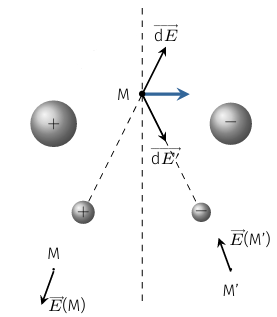
Distribution présentant un plan de d’anti-symétrie.
Cette symétrie se retrouve également dans le champ électrique : si l’on note \(M'\)
l’image de \(M\) par une symétrie de plan \(\mathcal{P'}\), on a
$$
\quad \overrightarrow{E}(M') = -\mathrm{sym}\left( \overrightarrow{E}(M) \right)
$$
Cherchons le champ créé en un point \(M \in \mathcal{P}'\). On voit alors qu’à tout
point \(P\) de la distribution, créant un champ \(\overrightarrow{\mathrm{d}E}(M)\),
correspond un point symétrique \(P'\) créant un champ \(\overrightarrow{\mathrm{d}E'}(M)\)
tel que \(\overrightarrow{\mathrm{d}E}(M)+\overrightarrow{\mathrm{d}E'}(M)\) est
perpendiculaire au plan \(\mathcal{P}'\). Ainsi le champ résultant \(\overrightarrow{E}(M)\)
est nécessairement perpendiculaire au plan \(\mathcal{P}'\).
Champ électrostatique créé par une distribution continue de charges
Fonctions de répartition
On sait que toute distribution de charges est rigoureusement discontinue puisque tout
transfert de charge ne se fait que par multiple entier de \(e\). Cependant, à l’échelle
macroscopique, un corps électrisé par frottement acquiert facilement une quantité de charge
(\(q = N e\)) de l’ordre de quelques \(\mathrm{nC}\) soit \(N \simeq 10^{10} \gg 1\).
Le nombre de particules est si grand que l’aspect discontinue passe inaperçu. On peut alors
décrire la distribution de charges comme une répartition continue de charges et définir une
fonction de répartition.
La densité volumique de charge \(\rho(M)\) décrit la répartition en volume d’une quantité
de charge. En un point \(M\) contenu dans un volume infinitésimal \(\mathrm{d}\tau\), la
quantité de charge s’écrit
$$
\quad \boxed{ \mathrm{d}q = \rho(M)\mathrm{d}\tau }
$$
où \(\rho(M)\) s’exprime en \(\mathrm{C.m^{−3}}\).
Si le milieu est homogène \(\rho = q_{total} /V = C^{te}\).
La densité surfacique de charge \(\sigma(M)\) décrit la répartition en surface d’une
quantité de charge. En un point \(M\) contenu dans un élément d’aire infinitésimal
\(\mathrm{d}S\), la quantité de charge s’écrit
$$
\quad \boxed{ \mathrm{d}q = \sigma(M)\mathrm{d}S }
$$
où \(\sigma(M)\) s’exprime en \(\mathrm{C.m^{−2}}\).
Si le milieu est homogène \(\sigma = q_{total} /S = C^{te}\).
La densité linéique de charge caractérise la répartition de la charge le long d’un fil
chargé. Pour un élément de longueur infinitésimal \(\mathrm{d}\ell\) situé en \(M\), la
quantité de charge s’écrit
$$
\quad \boxed{ \mathrm{d}q = \lambda(M)\mathrm{d}\ell }
$$
où \(\lambda(M)\) s’exprime en \(\mathrm{C.m^{−1}}\).
Le passage du discret au continu pour le calcul du champ électrostatique transforme la somme
en une intégrale :
$$
\quad \boxed{ \overrightarrow{E}(M)
= \sum_{i=1}^{N} \frac{q_i}{4\pi\varepsilon_0r_i^2} \overrightarrow{u_i}
\quad \xrightarrow{ N \to \infty } \quad
\int_{\mathcal{D}} \frac{\mathrm{d}q}{4\pi\varepsilon_0r^2} \overrightarrow{u} }
$$
où \(\mathcal{D}\) représente le domaine d’intégration (volume, surface, ligne). Suivant le
type de problème, on remplacera \(\mathrm{d}q\) par \(\rho\mathrm{d}\tau\) ou bien
\(\sigma\mathrm{d}S\) ou bien \(\lambda\mathrm{d}\ell\).
Le calcul de cette intégrale est en général grandement simplifié si la distribution présente
des symétries. C’est pourquoi, avant tout calcul direct, il est conseillé de faire une
première analyse des propriétés de symétrie.
Exemple : champ créé dans le plan médiateur d’un segment chargé
On considère un segment \([AB]\) de longueur \(L\), contenant une charge \(Q\) uniformément
répartie le long du segment. On cherche à calculer le champ électrique créé dans un plan
médiateur du segment à la distance \(r\).
Ici la densité de charge est constante : \(\lambda=Q/L\). Le plan médiateur est un
plan de symétrie et le plan contenant le fil également de sorte que le champ est radial
dirigé suivant le vecteur polaire \(\overrightarrow{u_r}\). Par ailleurs, par symétrie de
révolution, le champ ne dépend que de \(r\). Nous avons donc
$$
\quad \overrightarrow{E}(M) = E_r \overrightarrow{u_r}
$$
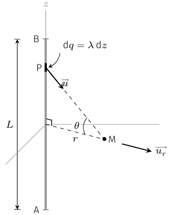
Calcul du champ créé par un segment chargé.
Soit \(\overrightarrow{\mathrm{d}E}(M)\) le champ créé en \(M\) par un élément de longueur
\(\mathrm{d}z\) du segment \([AB]\) :
$$
\quad \overrightarrow{\mathrm{d}E}(M)
= \frac{1}{4\pi\varepsilon_0}\frac{\lambda\mathrm{d}z}{PM^2} \overrightarrow{u}
$$
Seule la composanted suivant \(\overrightarrow{u_r}\) donnera une contribution non nulle au
champ total en \(M\) :
$$
\quad \mathrm{d}E_r = \overrightarrow{\mathrm{d}E} \cdot \overrightarrow{u_r}
= \frac{1}{4\pi\varepsilon_0}\frac{\lambda\mathrm{d}z}{PM^2}\cos(\theta)
$$
Les variables \(PM\), \(z\) et \(\theta\) étant liées, il faut choisir une variable
d’intégration. L’angle \(\theta\) est un bon choix.
On a :
$$
\quad \begin{aligned}
\tan(\theta) = \frac{z}{r} \quad & \rightarrow \quad
\mathrm{d}z = \frac{r}{\cos^2(\theta)} \mathrm{d}\theta \\
\cos(\theta) = \frac{r}{PM} \quad & \rightarrow \quad
\frac{1}{PM^2} = \frac{\cos^2(\theta)}{r^2}
\end{aligned}
$$
D’où
$$
\quad \mathrm{d}E_r =
\frac{1}{4\pi\varepsilon_0}\frac{\lambda}{r} \cos(\theta) \mathrm{d}\theta
$$
L’angle \(\theta\) varie entre \(-\theta_0\) et \(\theta_0\) lorsque le segment est balayé
du point \(A\) au point \(B\). On a :
$$
\quad \sin(\theta_0) = \frac{L}{2\sqrt{r^2+(L/2)^2}}
$$
L’intégration entre \(-\theta_0\) et \(\theta_0\) permet de déterminer l’expression du champ
éléctrique au point M :
$$
\quad \begin{aligned} E_r & = \int_{-\theta_0}^{\theta_0}
\frac{\lambda}{4\pi\varepsilon_0r} \cos(\theta) \mathrm{d}\theta \\
& = \frac{\lambda}{4\pi\varepsilon_0r} \left( \sin(\theta_0) - \sin(-\theta_0)\right)
& = \frac{\lambda}{4\pi\varepsilon_0r} 2 \sin(\theta_0)
\end{aligned}
$$
On peut finalement écrire le champ électrique :
$$
\quad \boxed{ \overrightarrow{E} = \frac{1}{4\pi\varepsilon_0r}
\frac{Q}{\sqrt{r^2+(L/2)^2}} \overrightarrow{u_r} }
$$
Remarquons que :
$$
\quad \lim_{r \to \infty} E = \frac{Q}{4\pi\varepsilon_0r^2}
$$
Ce qui est cohérent avec le fait qu’à grande distance le segment est assimilable à une
charge ponctuelle.